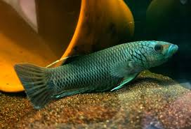
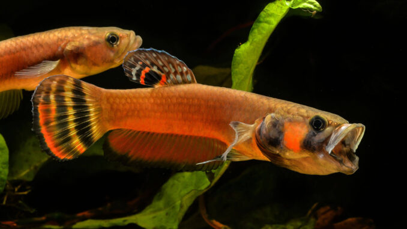
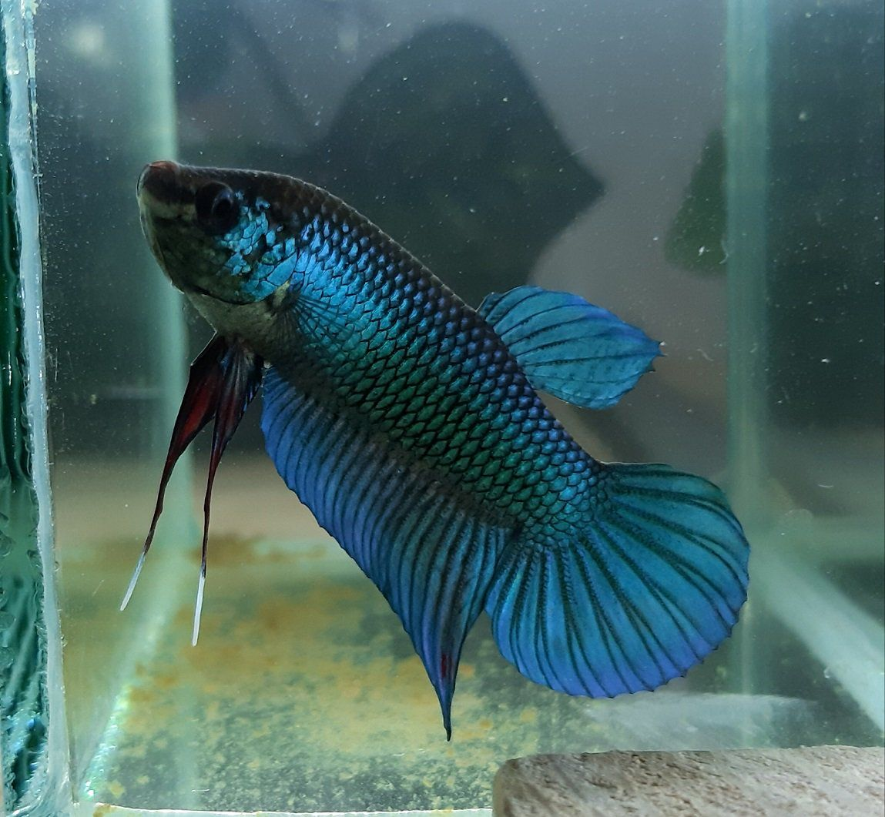
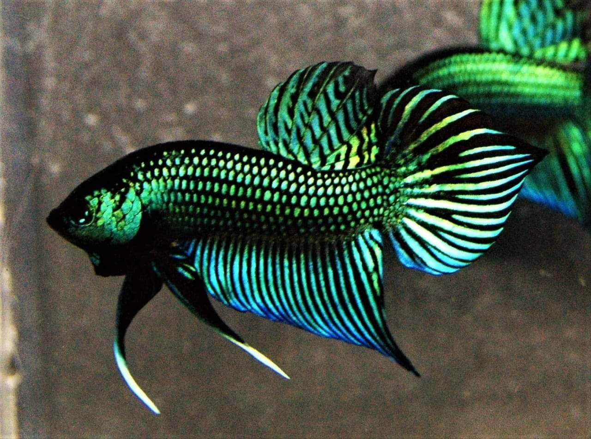
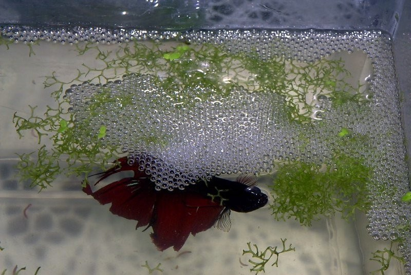
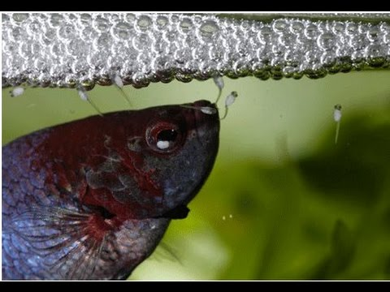

el pes betta o luchador de siam es probeniente de tailandia, locales de laos, siam, bietnan y camboya, fue nombrado por theodor cantor quien los nombro como Macropodus pugnax, luego de esto el pes fue importado a Alemania, en 1910 el Dr. Tate regan se da cuenta que no es un macropodus y lo nombra como betta splendes, en su estado salvaje tiene colores opacos como el marron, gris y un ligero negro, en su principio eran utilizados como peces de peleas por su agrecividad al estar en un espacio limitado junto a otros machos, alguno de estos eran llamados como :
antuta
macrostoma
ambelli
machai
reproduccion del pes betta
para la reproduccionde este acuatico devemos tomar en cuenta algunos factores como, el clima, el acuario, la alimentacion de los ejemplares y la de los alebines a la hora del nacimiento
la temperatura ideal para el agua a la hora de reproducir de estos peces es de unos 26C a 28C, recordar que dependiendo la temperatura del agua sera la eclocion, mayor de 32 el 79% de la camada sera hembra y de 26 a 32 grados el 88.9% seran machos, el pes betta a diferencia de otros peces crea u nido de burbujas donde emcubar sus huevos
luego de 42-72 horas comenzaran a ecloseonar los huevos combirtiendose en alebines
